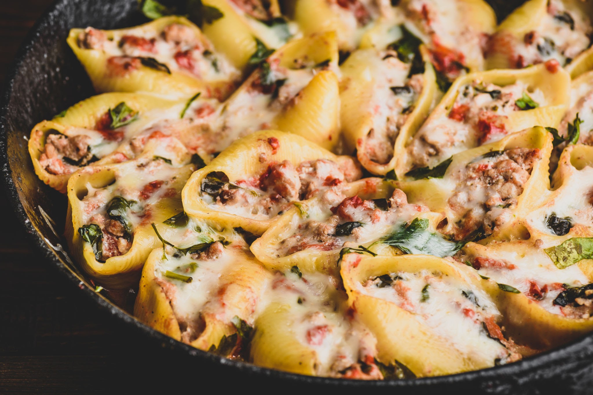

Stuffed Shells

Description
Perfect for special family dinners or weekend hosting, these stuffed shells feature jumbo pasta pockets filled to
the brim with a rich blend of creamy ricotta, nutrient-dense spinach, and garlic. Baked on a bed of savory
marinara sauce and blanketed under a golden, bubbly layer of cheese, they look just as stunning as they taste.
Ingredients
- 20 jumbo pasta shells
- 1 (24 ounce) jar marinara sauce
- 15 ounces ricotta cheese
- 10 ounces frozen chopped spinach, thawed and squeezed completely dry
- 2 cups shredded mozzarella cheese, divided
- ½ cup grated Parmesan cheese
- 1 egg
- 1 teaspoon garlic powder
- Salt and pepper to taste
Directions
- Preheat oven to 375°F (190°C).
- Cook the jumbo shells in a large pot of boiling salted water for roughly 9 to 11 minutes, ensuring they stay
firm enough to hold their shape. Drain and rinse with cold water to stop cooking.
- In a medium bowl, thoroughly combine the ricotta cheese, thawed and dried spinach, egg, garlic powder,
Parmesan cheese, and 1 cup of the mozzarella cheese. Season with salt and pepper.
- Spread 1 cup of the marinara sauce evenly over the bottom of a 9x13-inch baking dish.
- Spoon a generous amount of the cheese and spinach mixture into each cooked pasta shell.
- Arrange the stuffed shells open-side up in a single layer in the baking dish.
- Pour the remaining marinara sauce evenly over the tops of the stuffed shells.
- Sprinkle the remaining 1 cup of mozzarella cheese over the entire dish.
- Cover loosely with aluminum foil and bake for 25 minutes. Remove foil and bake an additional 5 to 10 minutes
until the cheese is browned and bubbly.